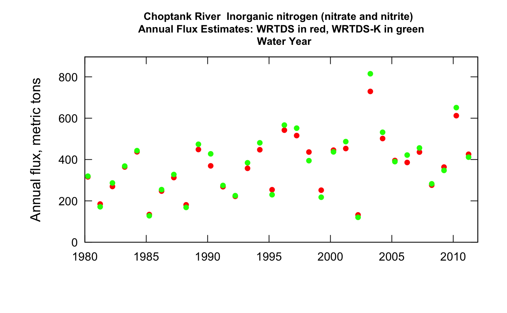
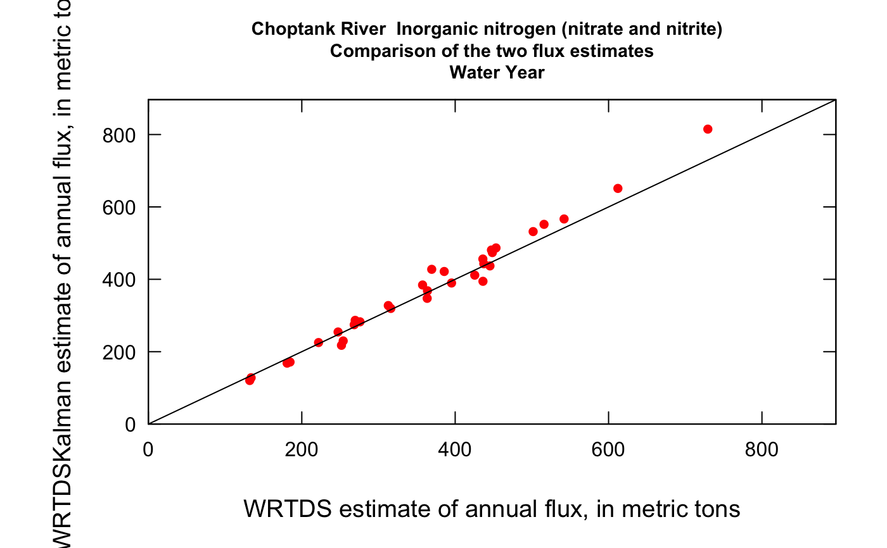
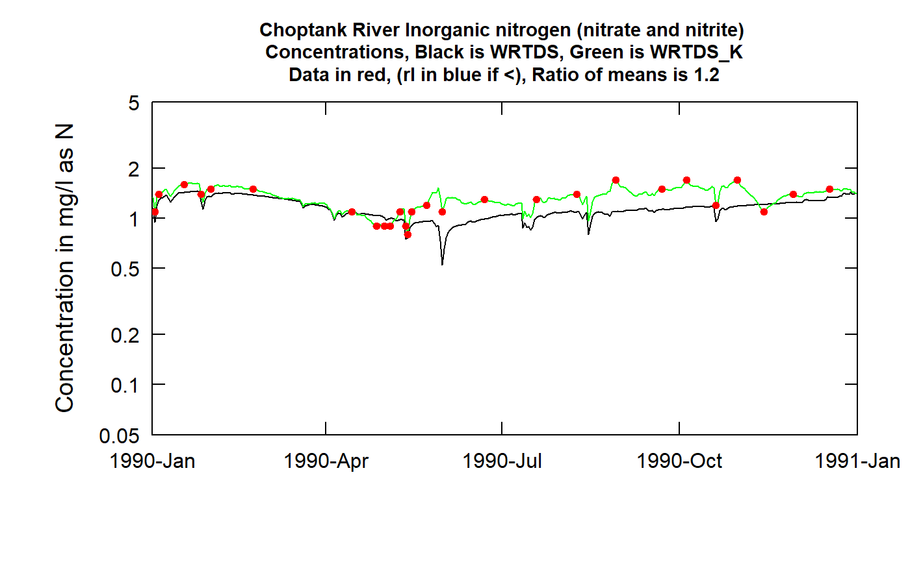
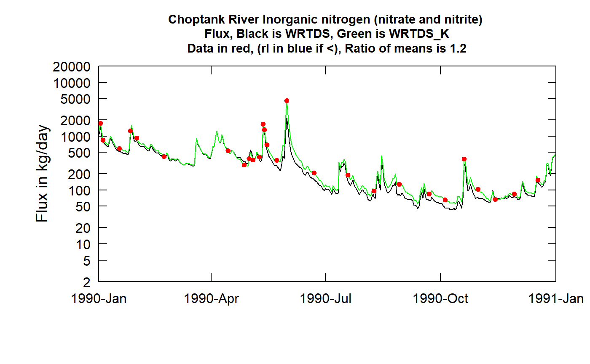

This function takes an existing eList Including the estimated model (the surfaces object in the eList) And produces the daily WRTDS_K estimates of concentration and flux
WRTDS_K(eList, rho = 0.9, niter = 200, seed = 376168) random_subset(df, col_name) plotWRTDS_K(eList) plotTimeSlice(eList, start, end, conc = TRUE, fluxUnit = 3, usgsStyle = FALSE)
| eList | named list with at least the Daily, Sample, and INFO dataframes |
|---|---|
| rho | numeric |
| niter | numeric |
| seed | number to set seed for reproducibility |
| df | data frame |
| col_name | column name |
| start | numeric start of DecYear for plot |
| end | numeric end of DecYear for plot |
| conc | logical. If |
| fluxUnit | number representing entry in pre-defined fluxUnit class array. |
| usgsStyle | logical option to use USGS style guidelines. Setting this option to TRUE does NOT guarantee USGS compliance. It will only change automatically generated labels |
#>#> Date Q Julian Month #> Min. :1979-10-01 Min. : 0.00991 Min. :47389 Min. : 1.000 #> 1st Qu.:1987-09-30 1st Qu.: 0.93446 1st Qu.:50311 1st Qu.: 4.000 #> Median :1995-09-30 Median : 2.40693 Median :53232 Median : 7.000 #> Mean :1995-09-30 Mean : 4.08658 Mean :53232 Mean : 6.523 #> 3rd Qu.:2003-09-30 3rd Qu.: 4.61565 3rd Qu.:56154 3rd Qu.:10.000 #> Max. :2011-09-30 Max. :246.35656 Max. :59076 Max. :12.000 #> #> Day DecYear MonthSeq Qualifier #> Min. : 1.0 Min. :1980 Min. :1558 Length:11688 #> 1st Qu.: 93.0 1st Qu.:1988 1st Qu.:1654 Class :character #> Median :184.0 Median :1996 Median :1750 Mode :character #> Mean :183.8 Mean :1996 Mean :1749 #> 3rd Qu.:275.0 3rd Qu.:2004 3rd Qu.:1845 #> Max. :366.0 Max. :2012 Max. :1941 #> #> i LogQ Q7 Q30 #> Min. : 1 Min. :-4.61412 Min. : 0.01808 Min. : 0.09606 #> 1st Qu.: 2923 1st Qu.:-0.06779 1st Qu.: 0.98704 1st Qu.: 1.16949 #> Median : 5844 Median : 0.87835 Median : 2.55661 Median : 2.86850 #> Mean : 5844 Mean : 0.76616 Mean : 4.08569 Mean : 4.08160 #> 3rd Qu.: 8766 3rd Qu.: 1.52945 3rd Qu.: 4.93017 3rd Qu.: 5.69169 #> Max. :11688 Max. : 5.50678 Max. :84.00395 Max. :25.47478 #> NA's :6 NA's :29 #> yHat SE ConcDay FluxDay #> Min. :-1.790952 Min. :0.1347 Min. :0.1776 Min. : 1.643 #> 1st Qu.:-0.004236 1st Qu.:0.2191 1st Qu.:1.0357 1st Qu.: 98.013 #> Median : 0.130934 Median :0.2504 Median :1.1959 Median : 250.088 #> Mean : 0.120318 Mean :0.2689 Mean :1.1978 Mean : 366.085 #> 3rd Qu.: 0.258944 3rd Qu.:0.3029 3rd Qu.:1.3551 3rd Qu.: 484.360 #> Max. : 0.661543 Max. :0.6146 Max. :1.9666 Max. :5519.450 #> #> FNConc FNFlux GenFlux GenConc #> Min. :0.8352 Min. : 77.55 Min. : 1.676 Min. :0.04929 #> 1st Qu.:1.0540 1st Qu.:169.71 1st Qu.: 97.263 1st Qu.:1.01741 #> Median :1.2067 Median :318.61 Median : 247.390 Median :1.20723 #> Mean :1.2004 Mean :362.71 Mean : 376.382 Mean :1.21465 #> 3rd Qu.:1.3314 3rd Qu.:538.44 3rd Qu.: 500.540 3rd Qu.:1.40929 #> Max. :1.6882 Max. :943.75 Max. :11927.056 Max. :2.43000 #>#> DecYear Q Conc Flux ConcDay FluxDay FNConc FNFlux #> 1 1980.249 4.251937 0.9485403 316.0491 0.9485403 115.67395 1.0027237 291.2176 #> 2 1981.249 2.217248 1.0351962 184.6712 1.0351962 67.40498 0.9988918 296.7260 #> 3 1982.249 3.046039 1.0361327 269.6309 1.0361327 98.41529 0.9931881 300.7424 #> 4 1983.249 4.986713 1.0072716 363.8563 1.0072716 132.80756 0.9931768 305.5898 #> 5 1984.249 5.718146 0.9901927 437.3007 0.9901927 160.05207 1.0017255 312.2260 #> 6 1985.249 1.517457 1.0571854 133.9210 1.0571854 48.88118 1.0165324 318.5007 #> GenConc GenFlux PeriodLong PeriodStart #> 1 0.9669032 116.93673 12 10 #> 2 0.9890625 62.55748 12 10 #> 3 1.0855914 104.60459 12 10 #> 4 1.0323968 134.41909 12 10 #> 5 1.0194338 162.12679 12 10 #> 6 1.0270915 46.70886 12 10#> Julian y #> 1 1 1 #> 2 2 2 #> 3 2 3 #> 4 3 4 #> 5 4 5 #> 6 4 6 #> 7 4 7 #> 8 6 8#> Julian y #> 1 1 1 #> 2 2 2 #> 4 3 4 #> 6 4 6 #> 8 6 8plotWRTDS_K(eList)#>#> DecYear Q Conc Flux ConcDay FluxDay FNConc FNFlux #> 1 1980.249 4.251937 0.9485403 316.0491 0.9485403 115.67395 1.0027237 291.2176 #> 2 1981.249 2.217248 1.0351962 184.6712 1.0351962 67.40498 0.9988918 296.7260 #> 3 1982.249 3.046039 1.0361327 269.6309 1.0361327 98.41529 0.9931881 300.7424 #> 4 1983.249 4.986713 1.0072716 363.8563 1.0072716 132.80756 0.9931768 305.5898 #> 5 1984.249 5.718146 0.9901927 437.3007 0.9901927 160.05207 1.0017255 312.2260 #> 6 1985.249 1.517457 1.0571854 133.9210 1.0571854 48.88118 1.0165324 318.5007 #> 7 1986.249 2.626601 1.0618753 247.3029 1.0618753 90.26557 1.0381520 326.6119 #> 8 1987.249 3.371675 1.0793320 312.7798 1.0793320 114.16462 1.0622419 334.9969 #> 9 1988.249 1.867960 1.1201692 180.8344 1.1201692 66.18540 1.0853851 342.9997 #> 10 1989.249 5.613020 1.0552017 448.4619 1.0552017 163.68861 1.1051520 348.5660 #> 11 1990.249 4.005942 1.1150432 369.3938 1.1150432 134.82874 1.1247402 353.4819 #> 12 1991.249 2.747975 1.1723741 268.3491 1.1723741 97.94742 1.1426819 357.1832 #> 13 1992.249 2.186277 1.2026596 221.8452 1.2026596 81.19535 1.1587716 360.2979 #> 14 1993.249 3.732176 1.2146392 357.4811 1.2146392 130.48062 1.1725594 361.6661 #> 15 1994.249 5.484135 1.1441066 447.2778 1.1441066 163.25641 1.1865009 363.4163 #> 16 1995.249 2.414046 1.2661492 253.9779 1.2661492 92.70195 1.2007452 365.6367 #> 17 1996.249 6.242936 1.1335190 541.9850 1.1335190 198.36649 1.2131736 368.8015 #> 18 1997.249 5.834054 1.1804448 515.8482 1.1804448 188.28459 1.2213506 371.0346 #> 19 1998.249 4.884982 1.2364499 436.2184 1.2364499 159.21971 1.2285259 373.7402 #> 20 1999.249 2.897675 1.2768116 251.7127 1.2768116 91.87514 1.2384909 376.8276 #> 21 2000.249 4.723111 1.2130552 445.3451 1.2130552 162.99632 1.2527574 381.0172 #> 22 2001.249 4.875308 1.2507032 453.2246 1.2507032 165.42699 1.2681713 383.8348 #> 23 2002.249 1.239903 1.3213448 132.1084 1.3213448 48.21957 1.2846985 386.9420 #> 24 2003.249 8.642767 1.1402590 729.4338 1.1402590 266.24335 1.3025226 390.3644 #> 25 2004.249 5.277301 1.2744342 501.6372 1.2744342 183.59922 1.3210543 394.7552 #> 26 2005.249 3.812146 1.3600447 395.2695 1.3600447 144.27338 1.3407300 398.7982 #> 27 2006.249 3.589955 1.3820549 385.7147 1.3820549 140.78586 1.3617441 403.3396 #> 28 2007.249 4.282298 1.4075197 436.0791 1.4075197 159.16887 1.3821373 406.8389 #> 29 2008.249 2.563471 1.4771626 275.8868 1.4771626 100.97456 1.4010320 408.9399 #> 30 2009.249 3.680756 1.4091435 363.4889 1.4091435 132.67344 1.4193067 408.2393 #> 31 2010.249 7.192968 1.3232321 612.1575 1.3232321 223.43749 1.4383092 407.4478 #> 32 2011.249 5.243093 1.4375572 425.4832 1.4375572 155.30137 1.4566813 405.9667 #> GenConc GenFlux PeriodLong PeriodStart #> 1 0.9669032 116.93673 12 10 #> 2 0.9890625 62.55748 12 10 #> 3 1.0855914 104.60459 12 10 #> 4 1.0323968 134.41909 12 10 #> 5 1.0194338 162.12679 12 10 #> 6 1.0270915 46.70886 12 10 #> 7 1.0587293 92.87972 12 10 #> 8 1.0350270 119.53840 12 10 #> 9 1.0696771 61.62119 12 10 #> 10 1.1128811 172.96007 12 10 #> 11 1.3021602 156.05727 12 10 #> 12 1.2662168 100.22339 12 10 #> 13 1.2316277 82.44044 12 10 #> 14 1.3029937 140.25614 12 10 #> 15 1.1273074 175.52058 12 10 #> 16 1.1518241 83.84329 12 10 #> 17 1.2048295 207.40581 12 10 #> 18 1.2327192 201.41283 12 10 #> 19 1.2446014 143.97286 12 10 #> 20 1.1323331 79.41315 12 10 #> 21 1.1772731 159.93525 12 10 #> 22 1.3398170 177.64203 12 10 #> 23 1.2815287 43.94148 12 10 #> 24 1.2567351 297.44578 12 10 #> 25 1.3178847 194.65365 12 10 #> 26 1.3055621 142.27108 12 10 #> 27 1.4139654 153.88904 12 10 #> 28 1.5030676 166.44515 12 10 #> 29 1.4801310 103.41478 12 10 #> 30 1.3632245 126.79269 12 10 #> 31 1.4070154 237.64665 12 10 #> 32 1.4297565 150.17670 12 10#>#>